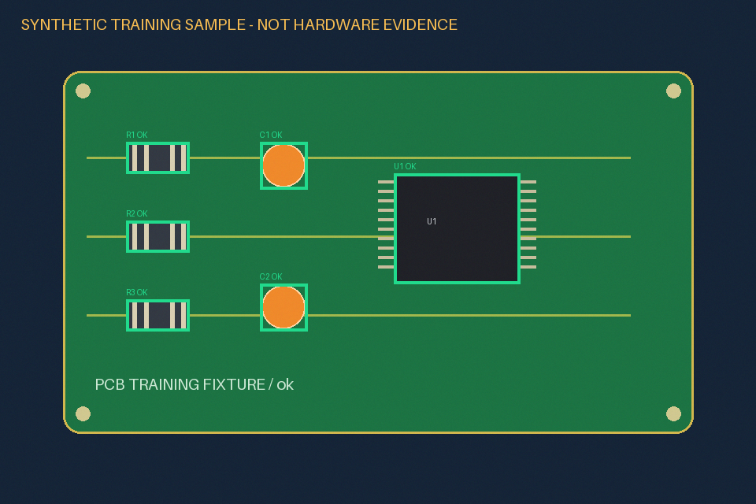
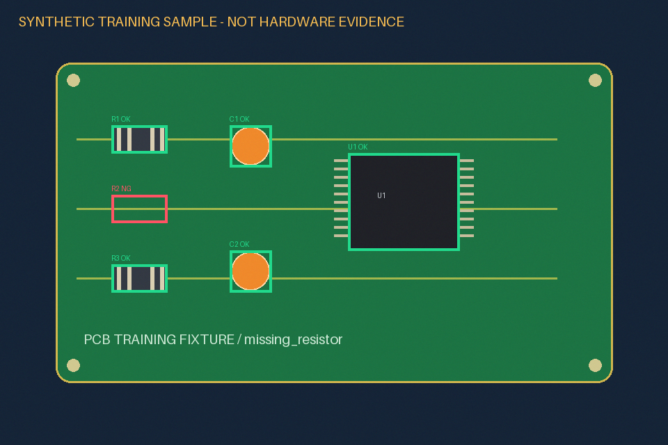
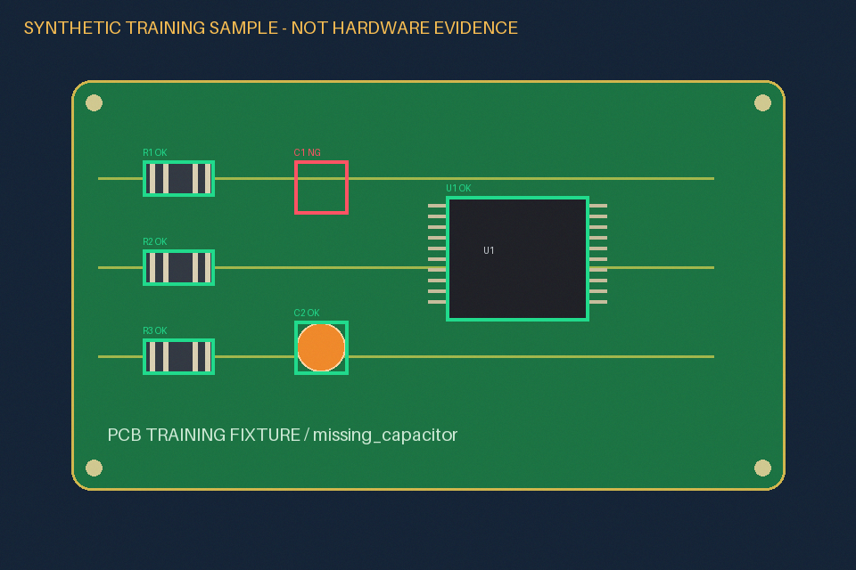
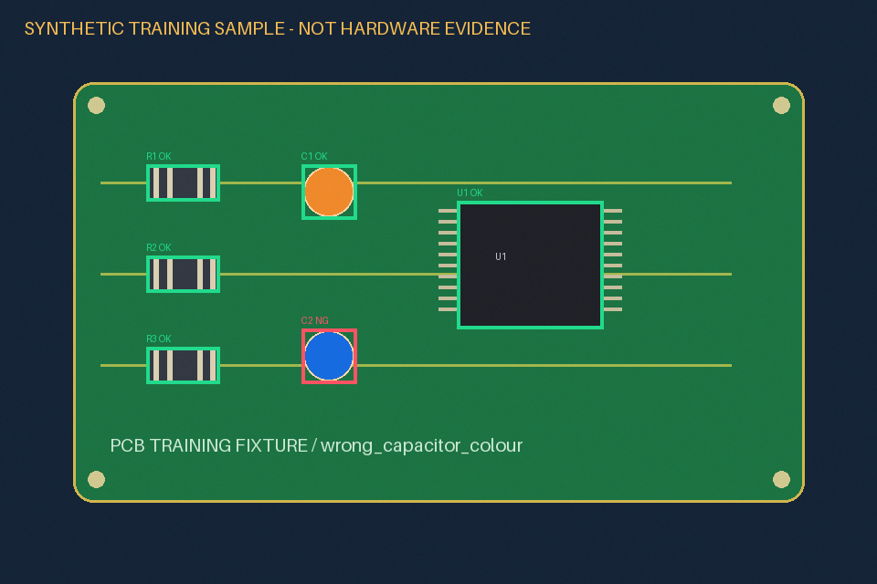
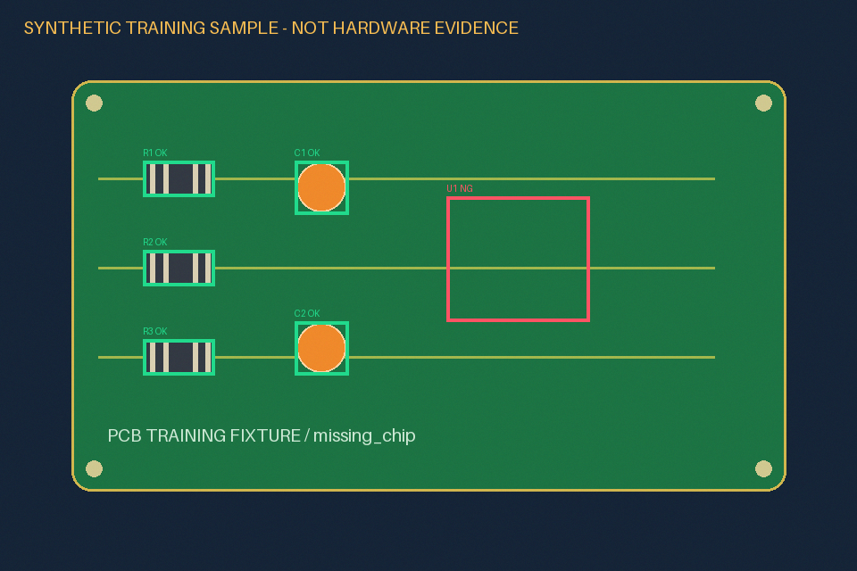
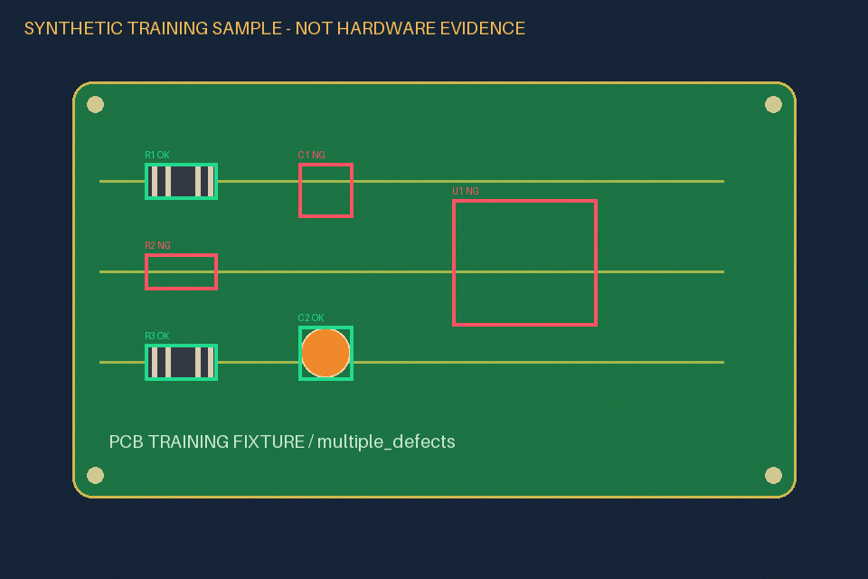

VISIONPREP / OFFLINE TRAINING
离线合成样例 · 软件实际计算结果 · 未连接实物设备
图像检测、二维标定、通信报文与结果保存的可复现训练程序
二维映射后的演示坐标：X=204.000 mm，Y=134.000 mm。运动字符串：x204y134z50a0；仅生成字符串，未发送。
x204y134z50a0
结果写入 CSV、各样例 JSON、原图/结果图与 用户日志。查看完整计算摘要。
界面数据全部来自本次程序执行；样本及九点坐标为明确标注的合成训练输入，不表示真实硬件测试或量测精度。

完整灰度、颜色比例和阈值见 该样例 JSON。




